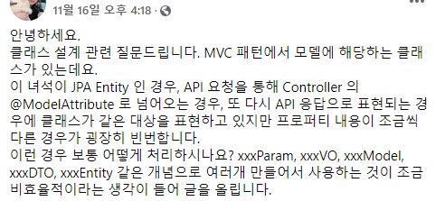
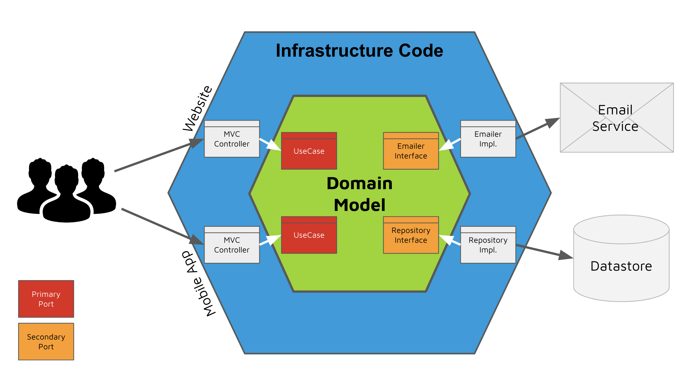

KSUG 20201120 답변
질문

안녕하세요.
클래스 설계 관련 질문드립니다. MVC 패턴에서 모델에 해당하는 클래스가 있는데요.
이 녀석이 JPA Entity 인 경우, API 요청을 통해 Controller 의 @ModelAttribute 로 넘어오는 경우, 또 다시 API 응답으로 표현되는 경우에 클래스가 같은 대상을 표현하고 있지만 프로퍼티 내용이 조금씩 다른 경우가 굉장히 빈번합니다.
이런 경우 보통 어떻게 처리하시나요? xxxParam, xxxVO, xxxModel, xxxDTO, xxxEntity 같은 개념으로 여러개 만들어서 사용하는 것이 조금 비효율적이라는 생각이 들어 글을 올립니다.
답변자가 생각할 때 질문자에게 전달해야한다고 생각하는 내용
- 레이어 구분에 대한 이해.
- DTO, VO와 같은 용어
답변
postfix로 붙은 param, vo, model, dto, entity란 단어가 붙은건 이 객체의 역할을 의미합니다.
이 객체의 역할에 대해서 이해를 하면 비효율이란 시각보다는 필요성에 대해서 더 공감하 실 것 같아 글을 작성합니다.
(저는 질문자의 이해의 수준을 모르기 때문에 그리고 글을 정리하는 취지에서 기저 내용부터 내용을 전개하겠습니다.)
먼저 순차적으로 이해를 위해 아키텍처패턴이란 개념이 필요합니다. 소프트웨어가 복잡해지면서 서로간에 간결한 의사소통(전문용어)으로 패턴을 많이 사용합니다. 시장에서 권장되는 또는 언급되는 패턴들이 여렇있는데(필자도 몇몇만 앎. 계속 공부해야죠..)
이 아키텍처 패턴이라는 개념을 배경으로 깔면 일단 생각해둬야하는건
복잡한 상황에에서 어떤 패턴을 만들기 위해서는 먼저 선행되어야하는건 레이어(layer)를 나눠야하는 것이라고 생각합니다.
실타래처럼 복잡하게 엉켜있는 것을 잘 풀어 헤치고 여기서 공통적인것과 공통적이지 않을 것을 잘 구별해 내어 경게를 긋고 그것을 잘 배치하고 어떤 규칙을 발견하고 이걸 패턴이라고 부르는게 어느정도는 패턴이 만들어지는 수순일겁니다.
그럼 layer를 살펴봐야하는데 제가 이해했을때 layer에 대해 시각적으로 도움이 되었던게 hexagonal architecture였습니다.

위의 이미지에서 보면 벌집모양 안에 다른 색으로 레이어의 경계를 볼 수 있습니다. 가장 중요한건 중앙에 있는 domain model이고 infrastructure code에서 우리가 스프링에서 짜는 Controller 레이어를 볼 수 있습니다.(사실 헥사고날 아키텍처 이야기는 좀 더 할게 있지만 내용 흐름상 진행하지 않겠습니다.)
우리가 @controller -> @service -> @repository의 코드를 짜는건 그냥 그게 좋아서라기 보다는 이런 소프트웨어에서 일반화된 아키텍처 패턴을 스프링에서는 채용을 한 것이고 우리는 그러한 패턴속에서 코드를 만들고 있는 것입니다.
이것을 생각의 기본으로 깔고 있어야 왜 우리가 entity, vo, dto…를 만들고 있는지에 대해 이해가 갈 수 있다고 생각합니다.
먼저 XxxEntity는 저 hexagonal architecture에서 domain model에 해당하는 것들입니다. domain 모델에 해당하는 것이므로 entity라고 이름을 붙이고 entity로 사용을 하는 것이죠. 위에 썼던 레이러란 표현을 하면 domain layer에 있는 것들이기 때문에 entity라고 이름을 붙인것이라고 볼 수 있습니다.
그럼 XxxDTO는 무엇일까요?
domain model에서 infrastructure code 그리고 사용자 이렇게 3개의 영역으로는 각각 layer가 다르죠?
dto의 뜻을 보면 데이터 전송객체 (data transfer object)
위키의 내용에서 보면 프로세스간에 데이터를 전송할때(carries data between processes.) 사용하는 거죠. 저희는 스프링 web을 통해 웹서비스를 개발하기 때문에 http protocol로 전송될 data 덩어리를 dto에 담는 것입니다. 즉 저 hexagonal architecture를 보면 infrastructure code - 사용자 레이어간에 DTO로 통신하는 것이라고 볼 수 있습니다.
참고로 XxxVO는 레이어랑 상관이 없습니다.(DDD 기준으로 보면 Entity쪽에 가깝지만…)
vo의 용어는 value object입니다.(참고로 전 예전에 vector object라고 불렀다가 챙피함을 당한적이 있죠. 이렇게 이불킥을하면 절대 안까먹게되네요 ㅎㅎ)
여기서 value란 단어는 불변객체라고 부르는 녀석들과 연결이 되어집니다. (setter는 없고 getter만 있으며 필드는 죄다 final이 되어있고 클래스를 만드시면 보통 vo라 부를 수 있습니다.)
이해하기 편하게 readonly object라고 생각하면 편한 것 같습니다. (불변하다는 속성 때문에 불변객체라고도 부르는데 불변객체를 만들면서 생기는 여러 장점들이 있습니다. 그건 effective java 같은 책을 보면 자세히 설명이 나와 있을 것 같네요..)
아무튼 vo란 용어는 (DDD관점 제외) 레이어랑 좀 상관 없이 부를 수 있는 용어라고 생각합니다.
그리고 xxxParam은 명시적으로 @RequestParam에 쓸 vo 객체(또는 dto객체)에 대한 역할을 알려주기 위한 클래스 네이밍으로 보이네요. 저는 보통 DTO를 사용하지만 postfix는 유의미할 때도 있으므로 사용하는건 호불호의 영역이라고 판단도 됩니다.(엄격하게하려면 DTO만 사용해도 무방하다고 봅니다.)
마지막으로 XxxModel은 이게 좀 애매…한데. mybatis 같이 sql mapper를 쓸 때 많이 쓰던 클래스명의 postfix 패턴인데 요새는 jpa를 쓰면서 Entity로 많이 쓰기 때문에…
제 판단에는 Model은 database에서 Resutset을 통해 가져온 데이터를 담을 객체에 붙이는 네이밍 패턴이였습니다. (요새 저는 잘 안쓰게 되네요… 오랜만에 봤습니다.)
결론
클래스 뒤에 붙이는 관례적인 이름은 보통 layer적인 사고를하면 당연히 붙여야지라는 생각을 하지 않을까 생각을 해봅니다. 앞서서 질문한 내용처럼 xxxParam, xxxVO, xxxModel, xxxDTO, xxxEntity 같은 개념으로 여러개 만들어서 사용하는 것이 조금 비효율적이라는 생각이 들어 글을 올립니다.은 레이어에 대한 고민 없이 코드 레벨로만 코드를 작성하는건 아닐까하는 생각이 들어 이 글을 작성하게 되었습니다. 제 개인이 가지는 생각을 정리한 글이기에 틀린 내용도 있을 수 있습니다. 이런 생각도 있다는 것을 개발에 참고만 하시면 좋겠습니다.
저도 클래스 만드는거 불편해서 kotlin의 data class나 lombok, sqlmapper 같은걸 쓰는데 불편하더라도 레이어를 구분하고 코드를 작성해야한다는 원칙이 더 우선이기 때문에 불편하지만 어쩔 수 없네요. 편하게 하려면 자바말고 동적타입 지원하는 언어서 훨씬 강점이 있다고 보여집니다.(근데 이것도 진리의 케바케라…)
감사합니다. :)